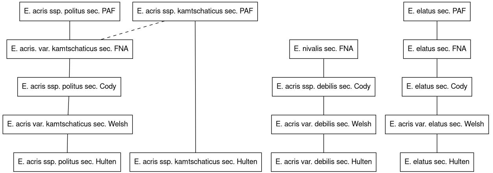

Blog 9: A guide to name usages
Posted by Cam on 2020-12-15
Following from the previous blog in which I described (i) the basic issue of taxon concepts, (ii) our goal for generating taxon concept relationship information for the Alaska flora, and (iii) the web app we designed to facilitate the work, I want to share here some of our initial results. Kimberly Cook has now worked through Alaskan species of Achillea, Erigeron, Bromus, Eritrichium, and Rumex.
The links above will show a page for each genus. The page is a graph of the relationships (lines, or ‘edges’) between different concepts (the boxes). Remember that a taxonomic concept is the way that a person or other agent (usually a taxonomist) conceives of the circumscription of a taxon with a particular name, at a particular time (i.e., in a particular publication). The maps above show primarily the relationships between the taxon concepts in the five major resources for Alaskan plants:
- Hultén’s 1968 Alaska flora,
- Welsh’s 1974 Alaska flora (based on Anderson, 1943), and
- Cody’s 2000 Yukon flora.
- Various authors in the Flora of North America (various dates, mostly preceding 2011), and
- The Panarctic Flora (2011)
The graphs are therefore guides to the common usages of names of Alaskan plants. The form of the edges (lines) indicates the kind of relationship between two name usages:
- Solid black: the usages are congruent with (the same as) each other (symbol: =)
- Dashed black: the usages overlap each other, but each contains some plants not in the other (symbol: ><)
- Dashed black with arrow: usage with an arrow from it is included in the usage with an arrow to it (<)
- Dotted black: the usages intersect each other, but the relationship cannot be specified in more detail (i.e., congruent, overlaps or includes); at least one plant is included in both usages (∩)
- Solid red: the usages are disjunct from each other; no plant in common (|)
If an edge is marked with a ‘*’, you can hover the cursor over the line to see notes associated with the inference made about the relationship.
A complete download of the graphs is available as RDF in either Turtle or RDF-XML serializations.
Kimberly and I are still learning a lot about the process of making and recording these inferences, and we’ll share a ‘How To’ guide at some point. If you see any relationships that seem odd or incorrect, please do get in touch, but please also remember that most of these judgments about taxon concept relationship are complex logical inferences made from incomplete data and as such there is often no “right or wrong”. The notes hopefully make clear any reasons for a particular decision.
One thing that I had not anticipated was just how necessary a ‘Guide to the Usages of Names for Alaskan Plants’ (which is what these graphs are) is. Take for example the case of the Erigeron acris complex (which Carolyn Parker has checked for us):

Without such a guide (or a careful reading of the sources) it is very hard to interpret what, e.g., Hultén’s Erigeron acris subsp. politis means today, given how many times the name has been changed since.
Many thanks, of course, to Kimberly for her impressive detective work on these names and usages.
References
- Anderson, J. P. (1943(-52)) Flora of Alaska and Adjacent Parts of Canada. Parts 1-9. Iowa State College Journal of Science, 18-26:
- 137-175, 381-446; (19) 133-205; (20) 213-257, 297-347; (21) 363-423; (23) 137-187; (24) 219-271; (26) 387-453.
- Cody, W. J. (2000) Flora of the Yukon Territory. NRC Research Press, Ottawa.
- Hultén, E. (1968) Flora of Alaska and Neighboring Territories: a Manual of the Vascular Plants. Stanford University Press, Stanford, CA.
- Welsh, S. L. (1974) Anderson’s Flora of Alaska and adjacent parts of Canada. Brigham Young University Press, Salt Lake City.